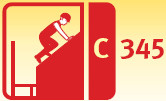
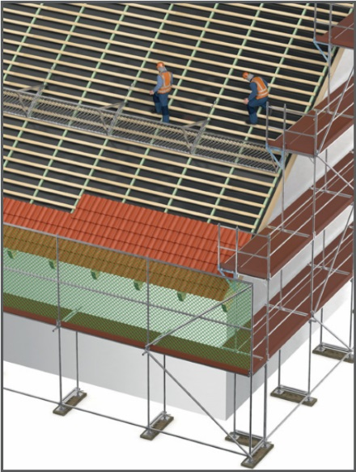
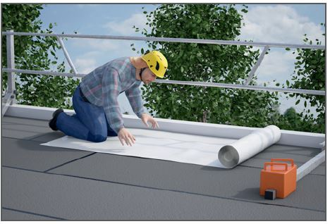
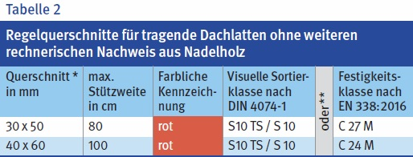

Dacharbeiten
|
 |


| Tabelle 1 | I | II | III | IV | |
| Ort/Art der Tätigkeit | Arbeitsplätze bei Dachneigungen von | ||||
| ≤ 22,5° | > 22,5° ≤ 45° |
> 45° ≤ 60° |
> 60° | ||
| A | Aufrichten von Dachstühlen | 1/4/5/9 | 1/4/5/9 | 4/5/9 | 4/5/9 |
| B | Dachlatten | 1 | 1 | 1/4 | 1/4 |
| C | Schalung | 1 | 1/2/8/** | 2/3/8 | 2/4/5 |
| D | Dachdeckung | 1 | 2/3/8/** | 2/3 | 2/4/5 |
| E | Dachabdichtung | 1 | 2/3/4/** | 2/3/4 | 2/4/5 |
| F | Metallfläche | 1 | 2/3/4 | 2/3/4 | 2/4/5 |
| G | Dachrinnenmontage, Ortgangbekleidung | 4/5/9 | 4/5/9 | 4/5/9 | 4/5/9 |
| H | Dachrinnenreinigung | 1 | 4/5/9/6 | 4/5/9/6 | 4/5/9/6 |
| I | Abbrucharbeiten | 1 | 2/3/* | 2/3/* | 2/4/5 |
| * bei Dachdeckungsprodukten aus nicht durchsturzsicheren Bauteilen, wie z. B. Faserzement-Wellplatten, alte Dacheindeckungen oder Dachlatten, die nicht den Anforderungen der Tabelle 2 entsprechen. |
|
||||
| ** bei rauen Oberflächen und Dachdeckungen, die eine ausreichende Standsicherheit gewährleisten, darf auf einen besonderen Arbeitsplatz verzichtet werden. | |||||
Absturzsicherungen
Seitenschutz

* Abweichungen von den Nennquerschnitten dürfen nach DIN EN 336:2013-12 höchstens -1 /+3 mm betragen (bezogen auf u = 20 % Holzfeuchte)
** Die Sortierklassen dürfen nicht den Festigkeitsklassen zugeordnet werden – jede ist auf Grund der unterschiedlichen Bewertungskriterien gesondert zu betrachten!
07/2021